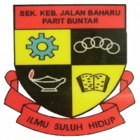
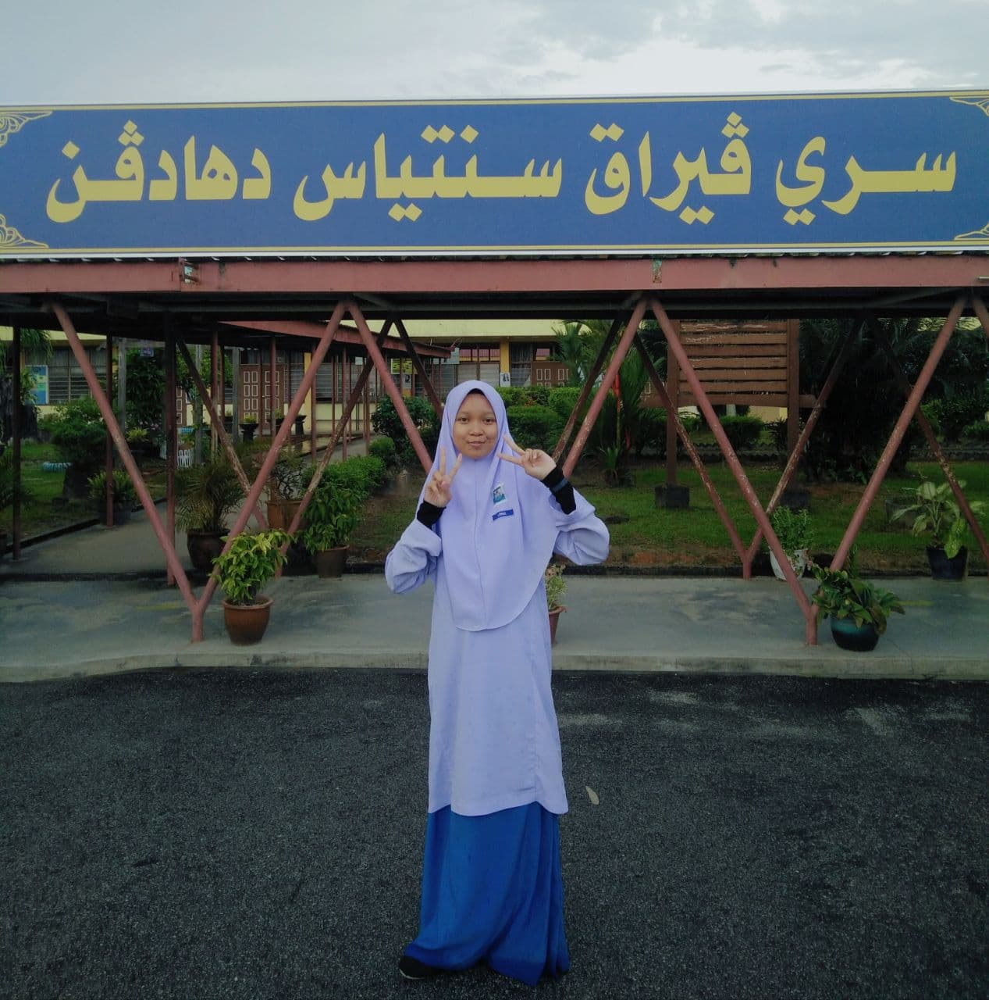
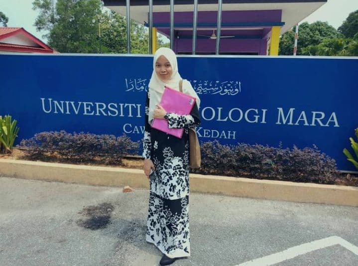

My Education
- SCHOOL

The logo of SKJB
- Sekolah Kebangsaan Jalan Baharu (Pra until UPSR)
- During I was 6years old, my parents sent me to a pra-school located in Sekolah Kebangsaan Jalan Baharu, Parit Buntar
in order to introduce me to new learning and environments.
- Then, I continue my Year 1 until Year 6 at the same school until I finished my UPSR in 2013 with a result 3A2B.

Me during the last day of SPM
- Sekolah Menengah Kebangsaan Seri Perak (Form 1 until Form 5)
- After I passed my UPSR, I furthered my secondary school at SMK Seri Perak, Parit Buntar from 2014 until 2018.
- UNIVERSITY - DIPLOMA
- UNIVERSITI TEKNOLOGI MARA

Me on the day of
registration at UiTM Kedah
- Universiti Teknologi MARA (UiTM) Sungai Petani, Kedah (2019 - 2021)
- After I finished my SPM in 2018, I furthered my sduties at UiTM Kedah majoring in course Diploma in Information Management.
- There are a total of 5 semesters and I am now currently in my final semester.
- When I was in the second weeks of second semesters, the pandemic CO-VID 19 has just started and we're
forced to go back to home and continue the studies by online distance learning (ODL).